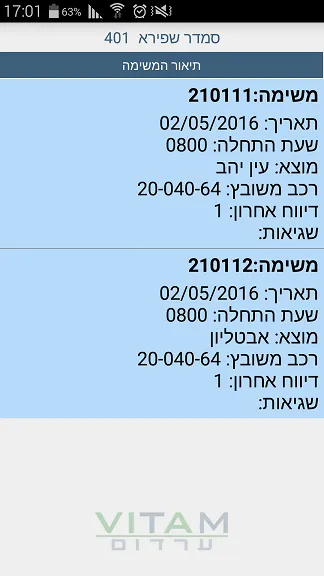
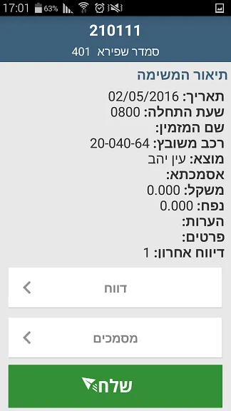
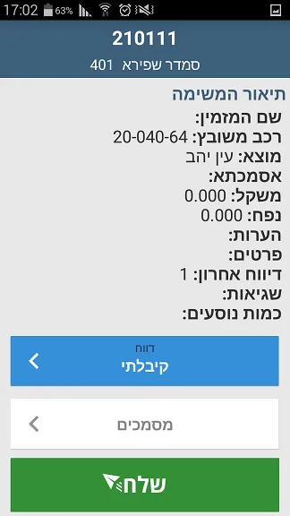

VITAM – אפליקציה לנהג
ניהול משימות הנהג באפליקציה ייעודית: כל נהג מקבל את המשימות שלו, ובמשרד עוקבים עד תום ההסעה או ההובלה. פחות טלפונים, יותר חיסכון.
הסדרן והנהג מסונכרנים
- שליחת משימות ישירות מתוכנת הסדרן אל הנהגים.
- קבלת נתונים ודיווחים חזרה מהשטח.
- סנכרון מלא בין הסדרנים לנהגים.
- גמישות: מגדירים נהגים מורשים, שדות מידע לצפייה ולכתיבה, ומספר וסוג כפתורי הדיווח.
- התקנה פשוטה מחנות Google Play.
האפליקציה פועלת בסמארטפונים עם מערכת אנדרואיד, ומתאימה גם ליישומי CARGO וגם ליישומי איתם. העבודה מול מערכת המידע נעשית ב-Web Services, ליעילות ולאמינות בהעברת הנתונים.



מה נוסף לאחרונה
התראת צליל
עם כניסת משימה חדשה לנהג, בתוך האפליקציה ומחוצה לה.
מסמכים וחתימות
צירוף תעודות משלוח וחתימת לקוח על המסך, עם אפשרות עריכה לפני השליחה.
ניווט ב-Waze
קישור ישיר לאפליקציית הניווט מתוך המשימה.
תעודת משלוח
הפקת תעודת משלוח וחתימה מהשטח.
צפייה במסמכים
המסמכים שצורפו להזמנה בסדרן או באיתם זמינים לנהג.
מייל ללקוח
שליחת ריכוז המסמכים למשימות שעליהן הופקה חשבונית.
אפליקציות למשלוחים, הפצה ומחסן
האפליקציות מבוססות אנדרואיד ואינן תלויות מכשיר: הן פועלות בסמארטפון או במסופון ייעודי, ישירות מול מערכת VIA CARGO.
VILOG – למרלו"ג
קליטת אסופי חבילות ומיונם לקווי הפצה: פריקה, מיון לנסיעות והעמסה לרכבי ההפצה, עם בקרה שוטפת למניעת טעויות העמסה.
VIGO – לנהג משלוחים
מסלול הנסיעה והמשימות בכל תחנה: איסוף, מסירה, גביית כסף, החתמת מסמכים ואיסוף גוביינות, עם דיווח שוטף למרכז התפעול.
QuickApp – למרכז שירות
תיעוד מסירת חבילות מסחר מקוון לנמען: עדכון סטטוס, חתימה וצילום תעודה מזהה, שמשודרים ישירות למערכת CARGO.
תכונות נוספות: סריקת ברקוד, הקלדה חופשית, שידור מיקום GPS, צילום, החתמה וניהול גמיש של תצוגת השדות.
מעוניינים לקבל פרטים נוספים?
השאירו פרטים ונחזור אליכם בהקדם.